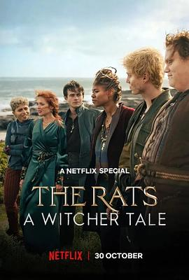

0.0
猎魔人：老鼠盗贼团
The Rats: A Witcher Tale
2025
美国
评分 0.0
导演:
梅尔西·阿尔马斯（Mairzee Almas）
演员:
杜夫·龙格尔（Dolph Lundgren） / 本·拉德克利夫（Ben Radcliffe） / 安吉·K·亚当斯（Anjli K. Adams） / Fabian McCallum / Connor Crawford / 克里斯特尔·埃尔文（Christelle Elwin） / 朱丽叶·亚历珊德拉（Juliette Alexandra）
类型:
剧情,奇幻
剧情简介
在大陆的战火阴影中，“老鼠帮”以敏捷、放肆和无法无天而闻名。他们是六名游离在法律之外的亡命之徒：刀法狠辣、行动迅速，却从不信任任何人——直到一次意外的机会降临。为了完成一桩足以改变命运的大劫案，他们不得不与一个落魄却仍保有荣誉感的猎魔人联手。这个猎魔人早已不复往日荣耀，盔甲磨损、利剑迟钝，却依然在荒野中保持着属于职业的最后一分倔强。当他与老鼠帮碰撞在一起，火药味与荒诞同时迸发：互不信任的眼神、暗中试探的对峙、夜里围火的沉默，都让这支临时队伍像一把随时可能折断的粗糙长矛。随着计划不断推进，他们潜入贵族领地，穿越混乱的战线，闯进腐败骑士团的地下金库。每一次冒险都把他们推向更危险的境地，也迫使他们逐渐暴露自己的脆弱。老鼠帮成员的过去开始浮现：被战争撕裂的家庭、被背叛压垮的信念、被迫逃亡的少年时代……这些碎片在彼此之间意外拼成了某种微弱的羁绊。猎魔人则在队伍的混乱中找回久违的目标感，他用沉默的坚持与本能的保护，让这群叛逆少年第一次意识到什么是“值得信任的人”。而随着大劫案逼近收尾，他们终于站在命运面前：是各自逃散、回到孤身漂泊的生活，还是为了彼此冒最后一次险？影片以奇幻冒险为外壳，呈现的是关于信任、伤痛与归属的故事。当剑光划破黑暗时，观众看到的不只是亡命之徒的刺激行动，更是他们在残酷世界中寻求一丝温度的努力。